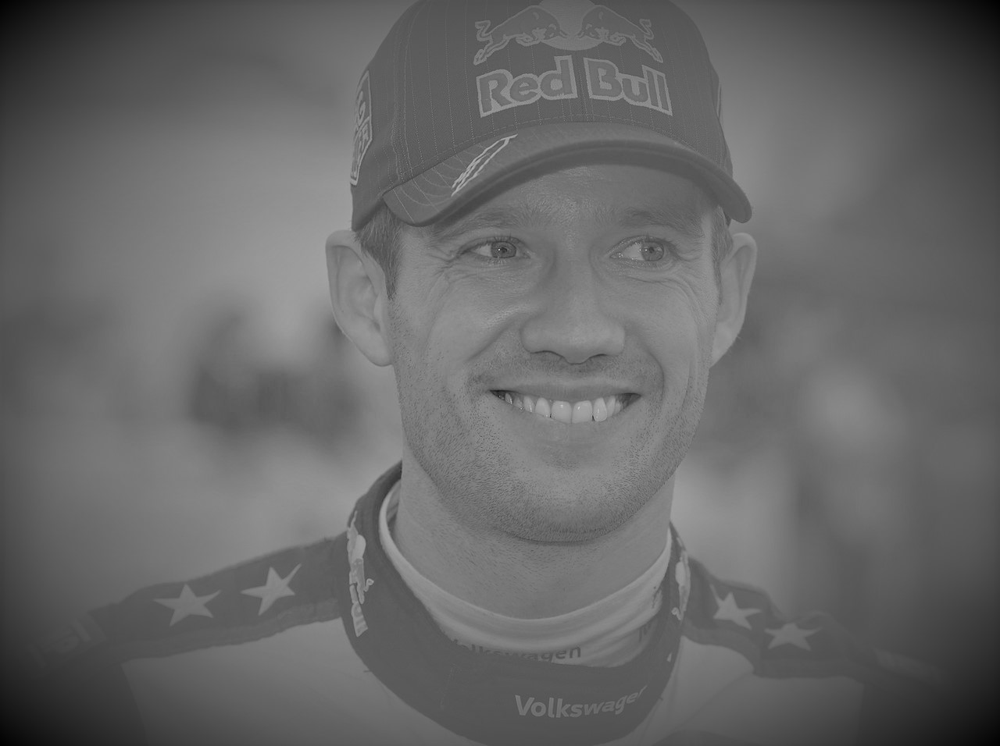

George William
×He made his first appearance as a co-driver in 1990, In 1993, he began to participate in more events, appearing in rallies, before expanding his sphere George used to train in alongside his father who was a rally driver, after learning how to drive properly Gabriel participated in the rally against his opponents that took place in 2000, where he secured two wins in the Europe Championship.
Charlie Jacob
×Charlie Jacob debuted in the World Rally Championship, in 2000 his successful partnership with the other wolrd rally team then from there He switched to rallycross for the 2002 after five race wins and nine podium finishes. he became the inaugural winner of the First World Rallycross Championship,
Ryan Jackson
×Ryan Jackson is one of the most successful World Rally Championship drivers of all time, ranking third in rally wins (34), and winning two championships,

Stanley Gabriel
×he is the 2nd most successful WRC driver, WRC driver, He began rallying in 2000 and won the World World Rally Drivers' Championship 8 times.

Alfred Matthews
×Steven Willianms stared rally in 2000, He is the most successful driver in the World's Rally Championship (WRC), he won several world championship and he also holds several other WRC records,
Jayden Frankie
×He is the most successful driver in the World Rally Championship (WRC), he won the world championship 9 times and He also holds several other WRC records,

Samuel Hudson
×he holds the record for the most drivers' championships, winning the world championship 9 times and He also holds the record for the most championships won in a row rally championship in the wolrd
Samuel Hudson
×he is the 6nd most successful WRC driver, He competes in the World Rally Championship where He surprised the more experienced driver
Jackson Chester
×he is the 2nd most successful WRC driver, He surprised the more experienced drivers by winning the first stage on the ice and taking a shock lead for his first WRC rally. With the advantage of his road position
Liam Rowan
×Steven Willianms stared rally in 2000, He is the most successful driver in the World's Rally Championship (WRC), he won several world championship and he also holds several other WRC records,